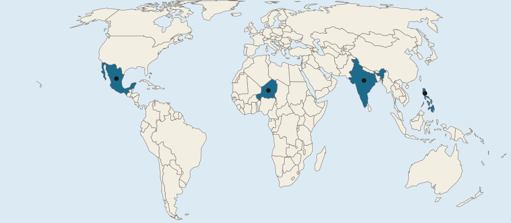

Unit 5 · 12 to 17% of the exam
Unit 5 practice test: Agriculture and Rural Land-Use Patterns and Processes
twelve questions, every option explained
12 exam-style questions from the unit, free, with an explanation for every option. Each has four answer choices (the real exam and the practice exams have five), and sets share one map, table, chart, image or passage. None of them is in the two practice exams. Covers: Introduction to Agriculture; Settlement Patterns and Survey Methods; Agricultural Origins and Diffusions; The Second Agricultural Revolution; The Green Revolution; Agricultural Production Regions; Spatial Organization of Agriculture; Von Thünen Model; The Global System of Agriculture; Consequences of Agricultural Practices; Challenges of Contemporary Agriculture; Women in Agriculture.

Text
The Aral Sea
LevlPrep summary, 2026, of reports by the UN Environment Programme and NASA. The Aral Sea, between Kazakhstan and Uzbekistan, was once one of the four largest lakes in the world. From the 1960s, Soviet planners diverted the two rivers that fed it to irrigate cotton fields in the desert. The sea shrank to a small fraction of its size and split into parts. Fishing towns were left far from the water. Winds now lift salty dust from the dry seabed onto farmland, and many irrigated fields became salty. In 2005, Kazakhstan finished a dam that helped the small northern part of the sea rise again.
1. According to the passage, which farming practice caused the Aral Sea to shrink?
- Clearing forest by slash and burn
- Building terraces on steep hillsides
- Diverting river water to irrigate cotton
- Herding animals back and forth across the dry seabed
Show the answer
Irrigation took the water that once reached the sea. This is one of the clearest cases of agriculture changing a landscape at the regional scale.
- Clearing forest by slash and burn: The region is desert; no forest is mentioned.
- Building terraces on steep hillsides: Terraces are not mentioned; the land is a flat desert.
- Correct: Diverting river water to irrigate cotton: Right: the rivers that fed the sea were used for irrigation.
- Herding animals back and forth across the dry seabed: Herding is not given as the cause.
2. The passage says many irrigated fields became salty. What is this process called?
- Salinization
- Terracing
- Domestication
- Mechanization
Show the answer
Salinization is the buildup of salt in soil, common where hot, dry places are irrigated for many years.
- Correct: Salinization: Right: salts left behind as irrigation water evaporates build up in the soil.
- Terracing: Terracing is cutting slopes into steps.
- Domestication: Domestication is changing wild species into crops and livestock.
- Mechanization: Mechanization is replacing labor with machines.
3. At what scale did the effects described in the passage reach, and why?
- Local: just one farm lost its water
- Regional: land, towns and water in two countries changed
- Global: the world's oceans shrank because of cotton farming
- National: the changes stayed within Uzbekistan alone
Show the answer
The Aral Sea case is regional: diversions in one area changed a sea, its fishing towns and farmland across two countries.
- Local: just one farm lost its water: The passage describes a whole sea, many towns and farmland in two countries.
- Correct: Regional: land, towns and water in two countries changed: Right: the changes spread across a large area of Kazakhstan and Uzbekistan.
- Global: the world's oceans shrank because of cotton farming: The Aral Sea is an inland lake; the oceans were not affected.
- National: the changes stayed within Uzbekistan alone: The sea lies between two countries, and the dam was built by Kazakhstan.
Map
Four countries and the Green Revolution

- Countries in the questions
4. In the 1950s, Norman Borlaug and other scientists bred short, disease-resistant wheat at a research center in one marked country. Which letter is it?
- A
- B
- C
- D
Show the answer
Wheat breeding in Mexico from the 1940s and 1950s gave the seeds that South Asian farmers later adopted.
- A: A marks India, which later planted the Mexican wheat widely from the mid-1960s.
- Correct: B: Right: B marks Mexico, where the new wheat varieties were bred.
- C: C marks the Philippines, where a rice institute bred the high-yield rice IR8.
- D: D marks Niger, in the dry Sahel of West Africa.
5. In 1966 a research institute released IR8, a high-yield rice. In which marked country was it bred?
- A
- B
- C
- D
Show the answer
IR8 came from the International Rice Research Institute in the Philippines and spread across rice-growing Asia.
- A: A marks India, a major adopter of the new rice and wheat.
- B: B marks Mexico, where the wheat was bred.
- Correct: C: Right: C marks the Philippines, home of the International Rice Research Institute.
- D: D marks Niger, where rice is a minor crop.
6. Farmers in the country marked D gained much less from the Green Revolution than farmers in the country marked A. Which reason best explains the difference?
- D farms dry, rain-fed land with little irrigation
- D's farmers had no crops of their own until the 1970s
- D is too far north for wheat and rice to grow
- D adopted GMO crops instead in the 1960s
Show the answer
The Green Revolution centered on wheat and rice with irrigation. Dry regions growing millet, sorghum and cassava, such as the Sahel, gained less.
- Correct: D farms dry, rain-fed land with little irrigation: Right: the new seeds were mainly wheat and rice and needed water, which much of Niger lacks.
- D's farmers had no crops of their own until the 1970s: Niger has been farmed for thousands of years; its farmers grow millet and sorghum.
- D is too far north for wheat and rice to grow: Niger is closer to the equator than India; the limits are water and crop type, not latitude.
- D adopted GMO crops instead in the 1960s: GMO crops did not spread on farms until the late 1990s.
7. Shifting cultivation lets a plot rest for many years before it is farmed again. What is the most likely effect if a growing population forces farmers in a rainforest region to return to each plot after only two or three years?
- Harvests rise because each plot is planted more often than before
- Farmers can switch to nomadic herding in the same forest
- The soil has too little time to recover, so harvests fall
- The climate becomes drier, so plots need irrigation
Show the answer
Shifting cultivation works when the land has a long rest (it is left fallow). When more people need food from the same forest, the rest shrinks, the soil is worn out and yields fall: the land is pushed past its carrying capacity.
- Harvests rise because each plot is planted more often than before: More frequent use without time to recover lowers yields on poor rainforest soils.
- Farmers can switch to nomadic herding in the same forest: Herding needs open grassland, not rainforest.
- Correct: The soil has too little time to recover, so harvests fall: Right: the long rest rebuilds nutrients; cutting it short wears out rainforest soils and yields drop.
- The climate becomes drier, so plots need irrigation: Shortening the rest period changes the soil, not the regional climate.
8. From an airplane over Kansas you see roads in a grid about 1 mile apart. At what scale of analysis is this grid best described, and what made it?
- Local: each farmer chose where to put the roads
- Global: the same grid covers farmland around the world
- Regional: a national survey law applied across many states
- Local: river banks set the line of each road
Show the answer
The grid repeats across the Midwest and West, a regional pattern produced by a national survey system.
- Local: each farmer chose where to put the roads: Farmers did not choose the lines; the national survey did, the same way across many states.
- Global: the same grid covers farmland around the world: Long lots in Quebec and metes and bounds in Virginia show the grid is not everywhere.
- Correct: Regional: a national survey law applied across many states: Right: the grid covers a whole region of the country, and it comes from the US township and range survey.
- Local: river banks set the line of each road: River banks shape long lots, not a grid of straight roads.
9. Which was a long-term effect of the food surplus that farming produced in hearths such as the Fertile Crescent?
- Populations fell because fewer people were needed
- Herders replaced farmers across the whole region
- Some people could do jobs other than farming
- Wild plants replaced crops as the main food
Show the answer
Farming in hearths like the Fertile Crescent made more food than farmers needed. That surplus supported larger populations, towns and people with other jobs.
- Populations fell because fewer people were needed: Food surpluses supported larger, not smaller, populations.
- Herders replaced farmers across the whole region: Farming spread; it did not give way to herding.
- Correct: Some people could do jobs other than farming: Right: a surplus feeds people who make tools, trade, write or govern, so jobs became specialized.
- Wild plants replaced crops as the main food: Domesticated crops became the main food.
10. How did the Second Agricultural Revolution help move Britain from stage 2 toward stage 3 of the demographic transition model in the 1800s?
- It raised death rates by spreading new diseases from the Americas
- It raised birth rates by creating more farm jobs for children
- Better diets lowered death rates, and fewer farm jobs led families to towns
- It ended migration, so the population stayed in rural areas
Show the answer
Linking units: more and better food lowers death rates; as farms need fewer hands and families move to towns, birth rates later fall. Real countries only roughly fit the model.
- It raised death rates by spreading new diseases from the Americas: More food lowered death rates; the diseases of the Columbian Exchange hit the Americas hardest.
- It raised birth rates by creating more farm jobs for children: It cut farm jobs, which over time lowered the value of large families.
- Correct: Better diets lowered death rates, and fewer farm jobs led families to towns: Right: more food cut deaths (stage 2); later, town life and less need for child labor on farms helped birth rates fall (stage 3).
- It ended migration, so the population stayed in rural areas: It pushed many people from rural areas to towns.
11. A family in rural Bangladesh grows rice on a small plot and eats most of it, while a farm in Iowa sells all of its corn to a grain company. Which comparison is accurate?
- The Bangladesh farm is subsistence, whereas the Iowa farm is commercial
- Both farms are commercial, but Iowa's is larger
- The Bangladesh farm is commercial, whereas the Iowa farm is subsistence
- Both are subsistence farms because both grow grain
Show the answer
A compare speaks of both sides: subsistence in Bangladesh, whereas commercial in Iowa.
- Correct: The Bangladesh farm is subsistence, whereas the Iowa farm is commercial: Right: one grows mainly to eat, the other entirely to sell.
- Both farms are commercial, but Iowa's is larger: The Bangladesh family eats most of its crop, so it is not mainly commercial.
- The Bangladesh farm is commercial, whereas the Iowa farm is subsistence: The labels are reversed.
- Both are subsistence farms because both grow grain: What decides it is whether the crop is eaten or sold, not which crop it is.
12. How have new farm technologies affected the carrying capacity of farmland?
- Higher yields let the same land feed more people
- Carrying capacity fell because farms grew larger
- Carrying capacity stays fixed whatever the technology
- More farmers per hectare were needed, so fewer people could be fed
Show the answer
Technology changes carrying capacity. Higher yields mean the same land supports more people, though water and soil limits remain.
- Correct: Higher yields let the same land feed more people: Right: better seed, machines and fertilizer raise output per hectare, so each hectare can support more people.
- Carrying capacity fell because farms grew larger: Bigger farms do not mean less food; output per hectare has risen.
- Carrying capacity stays fixed whatever the technology: Carrying capacity depends on technology and how land is used.
- More farmers per hectare were needed, so fewer people could be fed: Technology cut the farmers needed per hectare.